Fabricio de Oliveira
ADS • Engenharia de Software • Pós em Full Stack
HTML
CSS
JavaScript
Full Stack
Crio interfaces modernas, responsivas e acessíveis, conectando boas práticas de front-end com lógica de back-end para transformar ideias em aplicações web funcionais.
ADS • Engenharia de Software • Pós em Full Stack
Uma seleção de projetos web com foco em estrutura semântica, responsividade, organização visual e experiência do usuário.


Controle financeiro com foco em organização, automação e apresentação clara das informações.
Visitar o projeto
Interface para organização de horários, cadastros e fluxo simples de reservas ou atendimentos.
Ver statusPágina de apoio para orientar alunos, reunir acessos importantes e facilitar a navegação inicial.
Visitar o projetoProjeto de estudo com foco em layout, cards, organização visual e experiência de compra simulada.
Visitar o projeto
Hub de links com perfis profissionais, redes sociais e atalhos para os principais canais.
Visitar o projetoPortfólio separado para apresentar projetos, documentação e experiência em infraestrutura e redes.
Visitar o projetoProjeto web voltado para organização, consulta e apresentação de informações de biblioteca.
Visitar o projetoProjeto educacional para organizar conteúdos, etapas de estudo e evolução no desenvolvimento web.
Visitar o projetoPerfil direcionado ao desenvolvimento web full stack, com base acadêmica sólida e prática em criação de soluções digitais.
Sou formado em Análise e Desenvolvimento de Sistemas e em Engenharia de Software. Atualmente curso pós-graduação em Desenvolvimento Full Stack, aprofundando meus conhecimentos em aplicações web modernas, organização de código e construção de soluções completas.
Meu foco está em desenvolver sites e aplicações web com estrutura limpa, layout responsivo, boa experiência de navegação e atenção aos detalhes visuais e técnicos.
Tecnologias e recursos utilizados nos estudos e projetos de desenvolvimento web.
Contato profissional para oportunidades, projetos e networking.